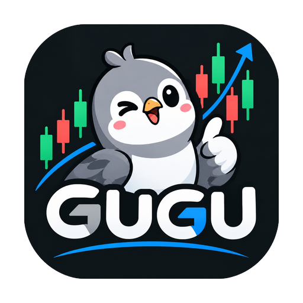

读懂市场，也读懂数据来源。
股票、ETF 与国内期货，配合自选、市场情绪、涨跌停和图表。公开源自动切换，缺失数据如实显示。
腾讯 · 新浪 · 东方财富 · 同花顺分时
GUGUai GitHub从读懂行情，到验证策略。
把智能体、代码和数据，放进同一张研究桌。
少一点来回切换。
多一点，经过验证的判断。
// 先定义信号，再检验假设。
const fast = sma(close, 10);
const slow = sma(close, 30);
return {
enter: crossAbove(fast, slow),
exit: crossBelow(fast, slow),
risk: { maxWeight: 0.2 }
};
// 伪代码示意，请按平台运行接口编写。信号、标的、样本窗口与风险约束。
把费用、滑点与样本边界放进结果。
保留参数版本、运行记录与指标。
先检查数据来源与样本窗口，再比较不同动量周期的表现。将交易成本和回撤作为检验约束。
核实数据 → 明确假设 → 设计实验 → 复核证据。模型提供的过程说明与工具回执可展开查看。
工具调用与结果有迹可循，
等待也能知道进度。
行情是入口，实验是过程，
可复核的记录是积累。
股票、ETF 与国内期货，配合自选、市场情绪、涨跌停和图表。公开源自动切换，缺失数据如实显示。
腾讯 · 新浪 · 东方财富 · 同花顺分时编写代码策略、保存版本，运行回测与参数实验。收益、回撤、费用和交易记录一起看。
代码编辑 · 版本管理 · 回测记录使用可校验的表达式创建因子，比较运行结果，让选股与策略研究使用同一份研究资产。
表达式校验 · 因子运行 · 结果比较自选模型提供方，让不同研究角色协作。流式回复、执行阶段与工具回执，减少无反馈的等待。
流式对话 · 工具调用 · 多角色复核独立的股票与期货仿真账户，记录持仓、费用、委托与风险。研究结果和仿真表现分开核对。
仿真账户 · 风险检查 · 执行留痕学堂包含量化研究与缠论学习路径。CLI 与界面共用 API，让重复工作进入可复用的流程。
学堂 · 缠论 · CLI · 本地持久化每一步都留下上下文，
下一次研究可以接着开始。
从一段对话、一条信号，
或一个你想验证的想法开始。
确认标的、样本和源日期，
先知道自己在研究什么。
创建策略或因子，
把费用和风险一起放进检验。
保存版本、运行与结果，
让结论可以比较，也可以复核。
已有仓库访问权限后，通过源码启动。
运行记录和供应商配置保存在本机。
git clone https://github.com/Jensen-Yao/gugu.git
cd gugu
npm install -g pnpm@11.21.0
pnpm install --frozen-lockfile
pnpm build
pnpm start目前提供本地 Web 工作台、Node.js 服务、CLI、Electron 桌面端，以及 Android 原生端。桌面端复用同一界面和本地后端；Android 端内置公开行情、本地模拟炒股、研究、学堂与工具，不需要填写服务地址。公开下载站尚未发布。此站点用于介绍产品与演示交互。
已接入的公开行情通道无需密钥。它们通过轮询获取数据，可能延迟、限流或暂时不可用，并非交易所逐笔行情。页面会展示来源、源日期与快照降级状态；同花顺通道用于股票分时。
供应商配置、会话和研究记录保存在本机 data 目录，不放入代码仓库。使用模型时，请求会发往你选择的模型提供方；调用外部工具时，数据传输范围由对应连接配置决定。
可以在工作台设置里配置模型提供方，包括 OpenAI 兼容接口及本地模型服务。模型的费用、网络可用性与工具支持，以你配置的提供方为准。
官网预览采用固定示例数据，帮助理解页面和研究流程。实际行情、模型调用和研究任务需要在启动后的本地工作台中使用。
应用代码位于 GitHub 项目仓库，目前需要访问权限。可以按 README 从源码运行，也可在本地执行 `pnpm desktop:build` 生成 Windows 安装包；这里没有提供未经发布的下载链接。